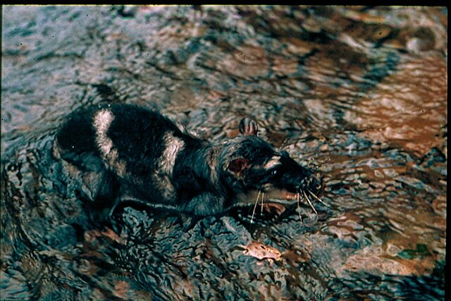
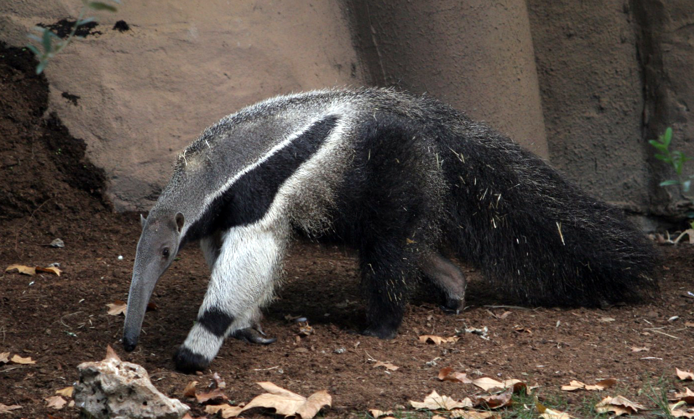

Tlacuache Acuático
El nombre científico del tlacuache acuático es Chironectes minimus. Se trata del único marsupial acuático y su origen es mexicano. Habita en las selvas del sur del país, principalmente en el estado de Chiapas Este peculiar animalito es muy importante para el ecosistema ya que regula las poblaciones de peces y crustáceos. Además es una especie bioindicadora de la salud del hábitat y de la contaminación de los cuerpos de agua, como lagunas, riachuelos, ojos de agua etc.
El tlacuache acuático posee un pelaje denso, suave y corto. Mayoritariamente de color gris claro, con cuatro bandas de color café o negro en la espalda. El pelaje de su vientre es un poco más delgado y blanco; sus orejas son negras y redondeadas, mientras que su cola es larga y sin pelo. Las extremidades posteriores del tlacuache acuático presentan características muy particulares: son largas con una membrana interdigital. Esta membrana es la muestra de su adaptación a la vida semiacuática. Ambos sexos poseen marsupio, aunque es importante mencionar que el del macho no es hermético. Su alimentación consta principalmente de insectos acuáticos, crustáceos, peces y anfibios.

OSO HORMIGUERO
El tamandúa es un mamífero que mide aproximadamente 1.3 m y llega a pesar entre 3 y 5 kg, posee una cola prensil que puede medir hasta 70 cm. Carecen de dientes por contar con un hocico alargado, presentan un cuerpo robusto y patas cortas pero fuertes; el tercer dedo de las patas anteriores posee una larga garra que puede llegar a medir hasta 5 cm de largo. Su nombre significa trampa de hormigas debido a que puede detectar su alimento con ayuda de su gran sentido del olfato. Una de las características distintivas es que presenta un pelaje tupido con coloraciones que van desde el color crema hasta el café dorado y negro con patrones que asemejan un chaleco. Puede encontrar a la especie hasta el Istmo de Tehuantepec, Chiapas (excepto en las tierras altas templadas)
De alimentación insectívora, come casi exclusivamente hormigas y termitas. La lengua, larga y estrecha, tiene unas espinas diminutas dirigidas hacia atrás y está impregnada de una saliva viscosa que hace que las termitas y las hormigas se queden enganchadas cuando el animal la introduce dentro de los nidos, con una frecuencia de hasta 150 veces por minuto. Es un animal solitario que solo busca a la pareja durante la época de reproducción. La gestación dura entre seis y siete meses y nace una sola cría en cada parto. Durante el primer año, el pequeño es transportado a la espalda de la madre.
De hábitos diurnos cuando no es molestado, se vuelve nocturno en zonas habitadas. Vive en solitario o en pareja y se mueve en amplios territorios de hasta 25 km2, siempre en busca de termiteros u hormigueros para alimentarse. Para acceder al interior, el animal utiliza sus fuertes uñas curvadas. Estas uñas son importantes también en la defensa: cuando se ve atacado por un jaguar o un puma, sus únicos enemigos naturales, se levanta sobre las patas traseras y les da golpes con las garras, que pueden producir heridas importantes a estos poderosos depredadores. Es un buen nadador que entra en el agua a menudo e incluso es capaz de atravesar a nado ríos de notable amplitud. Aunque está perfectamente capacitado para excavar, no construye guaridas para descansar y prefiere hacerlo en un hoyo o en cualquier cavidad del suelo, donde se tumba enroscándose sobre sí mismo con el hocico entre las patas y la gran cola sobre el cuerpo.
